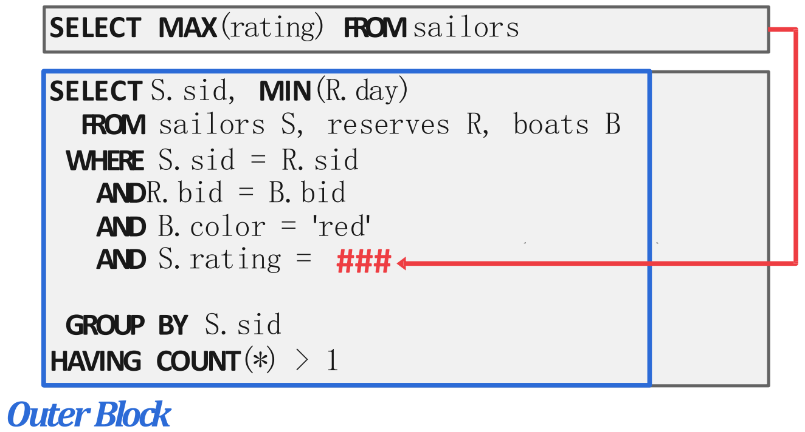

<!DOCTYPE html>
<html><head><title>16. Query Optimization Part 1 - Rule-based (Bigdata and Knowledge Management Systems 1, SNU GSDS)</title><meta charSet="utf-8"/><meta name="viewport" content="width=device-width, initial-scale=1.0"/><meta property="og:title" content="16. Query Optimization Part 1 - Rule-based (Bigdata and Knowledge Management Systems 1, SNU GSDS)"/><meta property="og:description" content="서울대학교 데이터사이언스대학원 정형수 교수님의 &amp;quot;데이터사이언스 응용을 위한 빅데이터 및 지식 관리 시스템&amp;quot; 강의를 필기한 내용입니다. 목차 Query Optimizer Overview § SQL 은 relational calculus 에 기반하고 있는데, 이것은 declarative 하고 “어떤 순서로” 이것을 처리할 지에 대해서는 명시하지 않는다."/><meta property="og:image" content="https://mdg.haeramk.im/static/og-image.png"/><meta property="og:width" content="1200"/><meta property="og:height" content="675"/><link rel="icon" href="../../../../../static/icon.png"/><meta name="description" content="서울대학교 데이터사이언스대학원 정형수 교수님의 &amp;quot;데이터사이언스 응용을 위한 빅데이터 및 지식 관리 시스템&amp;quot; 강의를 필기한 내용입니다. 목차 Query Optimizer Overview § SQL 은 relational calculus 에 기반하고 있는데, 이것은 declarative 하고 “어떤 순서로” 이것을 처리할 지에 대해서는 명시하지 않는다."/><meta name="generator" content="Quartz"/><link rel="preconnect" href="https://fonts.googleapis.com"/><link rel="preconnect" href="https://fonts.gstatic.com"/><link href="../../../../../index.css" rel="stylesheet" type="text/css" spa-preserve/><link href="https://cdn.jsdelivr.net/npm/katex@0.16.0/dist/katex.min.css" rel="stylesheet" type="text/css" spa-preserve/><link href="https://fonts.googleapis.com/css2?family=IBM Plex Mono&amp;family=Gowun Batang:wght@400;700&amp;family=Gowun Dodum:ital,wght@0,400;0,600;1,400;1,600&amp;display=swap" rel="stylesheet" type="text/css" spa-preserve/><script src="../../../../../prescript.js" type="application/javascript" spa-preserve></script><script type="application/javascript" spa-preserve>const fetchData = fetch(`../../../../../static/contentIndex.json`).then(data => data.json())</script></head><body data-slug="gardens/database/originals/bkms01.fall.2024.gsds.snu.ac.kr/lectures/16.-Query-Optimization-Part-1---Rule-based"><div id="quartz-root" class="page"><div id="quartz-body"><div class="left sidebar"><h1 class="page-title "><a href="../../../../..">Madison Digital Garden</a></h1><div class="spacer mobile-only"></div><div class="search "><div id="search-icon"><p>Search</p><div></div><svg tabIndex="0" aria-labelledby="title desc" role="img" xmlns="http://www.w3.org/2000/svg" viewBox="0 0 19.9 19.7"><title id="title">Search</title><desc id="desc">Search</desc><g class="search-path" fill="none"><path stroke-linecap="square" d="M18.5 18.3l-5.4-5.4"></path><circle cx="8" cy="8" r="7"></circle></g></svg></div><div id="search-container"><div id="search-space"><input autocomplete="off" id="search-bar" name="search" type="text" aria-label="Search for something" placeholder="Search for something"/><div id="results-container"></div></div></div></div><div class="darkmode "><input class="toggle" id="darkmode-toggle" type="checkbox" tabIndex="-1"/><label id="toggle-label-light" for="darkmode-toggle" tabIndex="-1"><svg xmlns="http://www.w3.org/2000/svg" xmlnsXlink="http://www.w3.org/1999/xlink" version="1.1" id="dayIcon" x="0px" y="0px" viewBox="0 0 35 35" style="enable-background:new 0 0 35 35;" xmlSpace="preserve"><title>Light mode</title><path d="M6,17.5C6,16.672,5.328,16,4.5,16h-3C0.672,16,0,16.672,0,17.5    S0.672,19,1.5,19h3C5.328,19,6,18.328,6,17.5z M7.5,26c-0.414,0-0.789,0.168-1.061,0.439l-2,2C4.168,28.711,4,29.086,4,29.5    C4,30.328,4.671,31,5.5,31c0.414,0,0.789-0.168,1.06-0.44l2-2C8.832,28.289,9,27.914,9,27.5C9,26.672,8.329,26,7.5,26z M17.5,6    C18.329,6,19,5.328,19,4.5v-3C19,0.672,18.329,0,17.5,0S16,0.672,16,1.5v3C16,5.328,16.671,6,17.5,6z M27.5,9    c0.414,0,0.789-0.168,1.06-0.439l2-2C30.832,6.289,31,5.914,31,5.5C31,4.672,30.329,4,29.5,4c-0.414,0-0.789,0.168-1.061,0.44    l-2,2C26.168,6.711,26,7.086,26,7.5C26,8.328,26.671,9,27.5,9z M6.439,8.561C6.711,8.832,7.086,9,7.5,9C8.328,9,9,8.328,9,7.5    c0-0.414-0.168-0.789-0.439-1.061l-2-2C6.289,4.168,5.914,4,5.5,4C4.672,4,4,4.672,4,5.5c0,0.414,0.168,0.789,0.439,1.06    L6.439,8.561z M33.5,16h-3c-0.828,0-1.5,0.672-1.5,1.5s0.672,1.5,1.5,1.5h3c0.828,0,1.5-0.672,1.5-1.5S34.328,16,33.5,16z     M28.561,26.439C28.289,26.168,27.914,26,27.5,26c-0.828,0-1.5,0.672-1.5,1.5c0,0.414,0.168,0.789,0.439,1.06l2,2    C28.711,30.832,29.086,31,29.5,31c0.828,0,1.5-0.672,1.5-1.5c0-0.414-0.168-0.789-0.439-1.061L28.561,26.439z M17.5,29    c-0.829,0-1.5,0.672-1.5,1.5v3c0,0.828,0.671,1.5,1.5,1.5s1.5-0.672,1.5-1.5v-3C19,29.672,18.329,29,17.5,29z M17.5,7    C11.71,7,7,11.71,7,17.5S11.71,28,17.5,28S28,23.29,28,17.5S23.29,7,17.5,7z M17.5,25c-4.136,0-7.5-3.364-7.5-7.5    c0-4.136,3.364-7.5,7.5-7.5c4.136,0,7.5,3.364,7.5,7.5C25,21.636,21.636,25,17.5,25z"></path></svg></label><label id="toggle-label-dark" for="darkmode-toggle" tabIndex="-1"><svg xmlns="http://www.w3.org/2000/svg" xmlnsXlink="http://www.w3.org/1999/xlink" version="1.1" id="nightIcon" x="0px" y="0px" viewBox="0 0 100 100" style="enable-background='new 0 0 100 100'" xmlSpace="preserve"><title>Dark mode</title><path d="M96.76,66.458c-0.853-0.852-2.15-1.064-3.23-0.534c-6.063,2.991-12.858,4.571-19.655,4.571  C62.022,70.495,50.88,65.88,42.5,57.5C29.043,44.043,25.658,23.536,34.076,6.47c0.532-1.08,0.318-2.379-0.534-3.23  c-0.851-0.852-2.15-1.064-3.23-0.534c-4.918,2.427-9.375,5.619-13.246,9.491c-9.447,9.447-14.65,22.008-14.65,35.369  c0,13.36,5.203,25.921,14.65,35.368s22.008,14.65,35.368,14.65c13.361,0,25.921-5.203,35.369-14.65  c3.872-3.871,7.064-8.328,9.491-13.246C97.826,68.608,97.611,67.309,96.76,66.458z"></path></svg></label></div></div><div class="center"><div class="page-header"><div class="popover-hint"><h1 class="article-title ">16. Query Optimization Part 1 - Rule-based (Bigdata and Knowledge Management Systems 1, SNU GSDS)</h1><p class="content-meta ">Nov 04, 2024, 14 min read</p><ul class="tags "><li><a href="../../../../../tags/database" class="internal tag-link">#database</a></li><li><a href="../../../../../tags/originals" class="internal tag-link">#originals</a></li><li><a href="../../../../../tags/snu-bkms24f" class="internal tag-link">#snu-bkms24f</a></li></ul></div></div><article class="popover-hint"><blockquote class="callout" data-callout="info">
<div class="callout-title">
                  <div class="callout-icon"><svg xmlns="http://www.w3.org/2000/svg" width="100%" height="100%" viewBox="0 0 24 24" fill="none" stroke="currentColor" stroke-width="2" stroke-linecap="round" stroke-linejoin="round"><circle cx="12" cy="12" r="10"></circle><line x1="12" y1="16" x2="12" y2="12"></line><line x1="12" y1="8" x2="12.01" y2="8"></line></svg></div>
                  <div class="callout-title-inner"><p>서울대학교 데이터사이언스대학원 정형수 교수님의 &quot;데이터사이언스 응용을 위한 빅데이터 및 지식 관리 시스템&quot; 강의를 필기한 내용입니다. </p></div>
                  
                </div>
<ul>
<li><a href="../../../../../gardens/database/originals/bkms01.fall.2024.gsds.snu.ac.kr/(SNU-GSDS)-Bigdata-and-Knowledge-Management-Systems-01" class="internal" data-slug="gardens/database/originals/bkms01.fall.2024.gsds.snu.ac.kr/(SNU-GSDS)-Bigdata-and-Knowledge-Management-Systems-01">목차</a></li>
</ul>
</blockquote>
<h2 id="query-optimizer-overview">Query Optimizer Overview<a aria-hidden="true" tabindex="-1" href="#query-optimizer-overview" class="internal"> §</a></h2>
<ul>
<li>SQL 은 relational calculus 에 기반하고 있는데, 이것은 declarative 하고 “어떤 순서로” 이것을 처리할 지에 대해서는 명시하지 않는다.
<ul>
<li>따라서 이런 relational calculus 에 “어떤 순서로” 처리할지를 결정해야 하고, 이것을 통해 생성된 relational algebra 에 기반한 결과물이 query plan 이다.</li>
</ul>
</li>
<li>어떤 plan 을 사용하냐에 따라 음청나게 성능이 달라질 수 있고, 따라서 좋은 plan 을 정하는 것이 중허다 이거야.</li>
<li>이렇게 query plan 을 짜주는 component 를 <em>Query Optimizer</em> 라고 한다.
<ul>
<li>참고로 첫 query optimizer 는 셀린저 optimizer (IBM system R) 라고 한다.</li>
</ul>
</li>
<li>크게 (1) heuristic, rule-based (2) cost-based search 두 가지 방법을 사용한다.</li>
</ul>
<h2 id="architecture">Architecture<a aria-hidden="true" tabindex="-1" href="#architecture" class="internal"> §</a></h2>
<p></p>
<ul>
<li>위 그림이 SQL 이 입력되었을 때부터 실행의 모든 부분이 명세된 <em>Physical Plan</em> 이 나오기까지의 과정을 나타낸 그림이다.</li>
<li>일단 <em>Logical Plan</em> 은 logical 한, relational algebra expression 이다.</li>
<li>그리고 이것과 동등하지만 더 빠르고, 각 operator 마다 어떻게 data 에 접근해야 하는지에 대한 access strategy 까지 전부 명세되어 있는 relational algebra expression 이 <em>Physical Plan</em> 인 것.</li>
<li>그래서 간단하게 살펴보면
<ol>
<li>SQL Query 는 <em>SQL Rewriter</em> 에 의해 parsing 전에 조금 변형되는 것이 가능하다. 하지만 흔한 일은 아닌 것.</li>
<li>Rewrite 된 SQL 은 <em>Parser</em> 에 의해 AST 로 바뀌고, <em>Binder</em> 에 의해 table name 등의 “이름” 에서 system catalog 에 명시된 ID 로 변환되어 <em>Logical Plan</em> 으로 바뀐다.</li>
<li>그 다음에 <em>Tree Rewriter</em> 가 이 <em>Logical Plan</em> 을 보고 plan tree 를 좀 변형하게 된다. 이것은 보통 수행된다.</li>
<li>마지막으로 rewrite 된 <em>Logical Plan</em> 는 <em>Optimizer</em> 에 의해 system catalog 및 cost model 을 고려해 <em>Physical Plan</em> 으로 바뀌게 된다.</li>
</ol>
<ul>
<li>참고로 system catalog 를 보는 것은 schema check 의 용도도 있지만, statistics 를 위해서도 있다.</li>
</ul>
</li>
</ul>
<p></p>
<ul>
<li>SQL 부터 relational algebra, logical plan, physical plan 까지의 변환 과정 예시이다. 한번 보고 넘어가자.</li>
</ul>
<h2 id="n-p-hard">N-P Hard<a aria-hidden="true" tabindex="-1" href="#n-p-hard" class="internal"> §</a></h2>
<ul>
<li>Join table 이 15개 정도 이전까지는 dynamic programming 으로 cost model 을 다 돌려 가장 최적의 plan 을 찾지만</li>
<li>이후부터는 optimize 자체가 너무 오래걸리기 때문에 적정선에서 optimize 를 멈춘다.
<ul>
<li>즉, estimation 을 하는셈</li>
</ul>
</li>
<li>이것은 query optimization 이 N-P hard problem 이기 때문이다. 즉, problem size 가 커질수록 정답을 찾는 cost 가 기하급수적으로 커져서 정답을 찾을 수 없다는 것임.</li>
</ul>
<h2 id="relational-algebra">Relational Algebra<a aria-hidden="true" tabindex="-1" href="#relational-algebra" class="internal"> §</a></h2>
<ul>
<li><em>Relational calculus</em> 은 set-based notation 으로 조건에 맞는 set 을 정의하는 것을 의미한다.
<ul>
<li>즉, 이것은 declarative 한 표현 방법이다.</li>
</ul>
</li>
<li><em>Relation algebra</em>: 그 set 을 구하기 위한 계산 순서로, operational 한 표현방법이다.</li>
<li>SQL 을 단순히 relational algebra 로 바꾸어서 AST 로 만들면 그게 logical plan 가 되고</li>
<li>그것을 최적화해서 실제 수행할 연산 및 취할 전략같은 것들이 모두 명시된 상태가 physical plan 이 되는 것.</li>
<li>SQL 은 relational calculus 에 기반을 두기 때문에, 이것만으로는 어떻게 수행할지 알 수 없어 algebra (plan) 으로 바꾼다.</li>
<li>근데 이걸 막 바꿔도 되나? -> (Relational algebra 의 창시자인) Codd’s theorem 에 따르면 calculus 와 algebra 가 1:1 로 대응되고 이때 성능상의 차이는 없다고 한다.</li>
</ul>
<h3 id="property">Property<a aria-hidden="true" tabindex="-1" href="#property" class="internal"> §</a></h3>
<ul>
<li>Relational algebra 는 다음과 같은 특징을 가진다:
<ul>
<li><em>Closed property</em>: Relational algebra 의 연산은 항상 input 과 output 이 모두 relational schema 이다.
<ul>
<li>따라서, relational algebra 의 연산 결과를 또 다른 relational algebra 에 피연산자로 넣는 것이 가능하다 이말이야.</li>
</ul>
</li>
<li><em>Typed property</em>: 각 값들은 “자료형 (type)” 을 가지는데, 이때의 자료형은 Attribute 를 말한다.
<ul>
<li>연산에 자료형이 있다는 것은 예를 들어 column <span class="math math-inline"><span class="katex"><span class="katex-html" aria-hidden="true"><span class="base"><span class="strut" style="height:0.6833em;"></span><span class="mord mathnormal">A</span></span></span></span></span> 로 projection 하고 싶으면 input, output 에 모두 column <span class="math math-inline"><span class="katex"><span class="katex-html" aria-hidden="true"><span class="base"><span class="strut" style="height:0.6833em;"></span><span class="mord mathnormal">A</span></span></span></span></span> 가 있어야 한다는 소리이다.</li>
</ul>
</li>
</ul>
</li>
<li>그리고 relational algebra 엄밀하게는 set-based 이고, SQL 는 bag (순서 없는 중복 허용 자료구조) 이라고 한다.</li>
</ul>
<h3 id="operators">Operators<a aria-hidden="true" tabindex="-1" href="#operators" class="internal"> §</a></h3>
<h4 id="unary">Unary<a aria-hidden="true" tabindex="-1" href="#unary" class="internal"> §</a></h4>
<ul>
<li>Projection (<span class="math math-inline"><span class="katex"><span class="katex-html" aria-hidden="true"><span class="base"><span class="strut" style="height:0.4306em;"></span><span class="mord mathnormal" style="margin-right:0.03588em;">π</span></span></span></span></span>): <code>SELECT …</code>
<ul>
<li>원하는 column 을 고르는 것 (전체 schema 에서 원하는 column 을 vertical 로 filtering).</li>
<li>Output schema 는 input schema 와 다를 수 있다 (schema change).</li>
<li>실제 DBMS 에서는 그렇지 않지만, Relational algebra 에서의 projection 은 중복 제거 때문에 row 의 개수가 줄어들 수 있다.</li>
</ul>
</li>
<li>Selection (<span class="math math-inline"><span class="katex"><span class="katex-html" aria-hidden="true"><span class="base"><span class="strut" style="height:0.4306em;"></span><span class="mord mathnormal" style="margin-right:0.03588em;">σ</span></span></span></span></span>): <code>WHERE predicate</code>
<ul>
<li>조건에 따라 원하는 tuple 을 고르는 것 (즉, horizontal filtering).</li>
<li>Select 는 schema change 가 일어나지 않는다.</li>
<li>알다시피 predicate 는 우선 실행하는게 유리하다 (Predicate pushdown): 먼저 filtering 하는 것이 당연히 데이터 사이즈를 줄여놓고 시작하기 때문.
<ul>
<li>여기에 깔린 생각은 output 이 동일하다면 빨리 실행되는 것이 와따라는 것이다.</li>
<li>어차피 언젠가는 filtering 한다면 이것을 먼저 수행해버려 빨리 실행될 수 있게 하는 것.</li>
</ul>
</li>
</ul>
</li>
<li>Rename (<span class="math math-inline"><span class="katex"><span class="katex-html" aria-hidden="true"><span class="base"><span class="strut" style="height:0.625em;vertical-align:-0.1944em;"></span><span class="mord mathnormal">ρ</span></span></span></span></span>): Column name 바꾸는 것 (즉, aliasing).
<ul>
<li>여러 table 에 같은 이름의 column 이 있을 수 있기 때문에 이런 rename operation 이 존재한다.</li>
<li>물론 내부적 (system catalog) 에서는 고유한 ID 가 있긴 하다.</li>
<li>Self-join, relationship table 에서 모호성이 발생할 수 있기 때문에 이런 operation 이 있는 것.</li>
<li><span class="math math-inline"><span class="katex"><span class="katex-html" aria-hidden="true"><span class="base"><span class="strut" style="height:1em;vertical-align:-0.25em;"></span><span class="mord"><span class="mord mathnormal">ρ</span><span class="msupsub"><span class="vlist-t vlist-t2"><span class="vlist-r"><span class="vlist" style="height:0.3361em;"><span style="top:-2.55em;margin-left:0em;margin-right:0.05em;"><span class="pstrut" style="height:2.7em;"></span><span class="sizing reset-size6 size3 mtight"><span class="mord mtight"><span class="mord mathnormal mtight">co</span><span class="mord mathnormal mtight" style="margin-right:0.01968em;">l</span><span class="mord mathnormal mtight">u</span><span class="mord mathnormal mtight">mn</span><span class="mord mathnormal mtight" style="margin-right:0.10903em;">N</span><span class="mord mathnormal mtight">o</span><span class="mord mtight">.</span><span class="mrel mtight">→</span><span class="mord mathnormal mtight">a</span><span class="mord mathnormal mtight" style="margin-right:0.01968em;">l</span><span class="mord mathnormal mtight">ia</span><span class="mord mathnormal mtight">s</span></span></span></span></span><span class="vlist-s">​</span></span><span class="vlist-r"><span class="vlist" style="height:0.15em;"><span></span></span></span></span></span></span><span class="mopen">(</span><span class="mord mathnormal" style="margin-right:0.00773em;">R</span><span class="mclose">)</span></span></span></span></span> 으로 명시된다: 즉, 예를들어 <span class="math math-inline"><span class="katex"><span class="katex-html" aria-hidden="true"><span class="base"><span class="strut" style="height:1em;vertical-align:-0.25em;"></span><span class="mord"><span class="mord mathnormal">ρ</span><span class="msupsub"><span class="vlist-t vlist-t2"><span class="vlist-r"><span class="vlist" style="height:0.3361em;"><span style="top:-2.55em;margin-left:0em;margin-right:0.05em;"><span class="pstrut" style="height:2.7em;"></span><span class="sizing reset-size6 size3 mtight"><span class="mord mtight"><span class="mord mathnormal mtight">co</span><span class="mord mathnormal mtight" style="margin-right:0.01968em;">l</span><span class="mord mathnormal mtight">u</span><span class="mord mathnormal mtight">mn</span><span class="mord mtight">1</span><span class="mrel mtight">→</span><span class="mord mathnormal mtight">s</span><span class="mord mathnormal mtight">t</span><span class="mord mathnormal mtight">u</span><span class="mord mathnormal mtight">d</span><span class="mord mathnormal mtight">e</span><span class="mord mathnormal mtight">n</span><span class="mord mathnormal mtight" style="margin-right:0.10903em;">tN</span><span class="mord mathnormal mtight">am</span><span class="mord mathnormal mtight">e</span></span></span></span></span><span class="vlist-s">​</span></span><span class="vlist-r"><span class="vlist" style="height:0.15em;"><span></span></span></span></span></span></span><span class="mopen">(</span><span class="mord mathnormal" style="margin-right:0.00773em;">R</span><span class="mclose">)</span></span></span></span></span> 등.</li>
</ul>
</li>
</ul>
<h4 id="binary">Binary<a aria-hidden="true" tabindex="-1" href="#binary" class="internal"> §</a></h4>
<ul>
<li>Union (<span class="math math-inline"><span class="katex"><span class="katex-html" aria-hidden="true"><span class="base"><span class="strut" style="height:0.5556em;"></span><span class="mord">∪</span></span></span></span></span>): 뭐 너가 아는 합집합.
<ul>
<li>인데, 좀 다른점은 relational algebra 는 typed 라는 것이다. 즉, 두 피연산자는 동일한 schema 를 가져야 한다.</li>
<li>그리고 SQL 에서는 중복제거를 하지 않는 <code>UNION ALL</code> 이 있다.</li>
</ul>
</li>
<li>Set-difference (<span class="math math-inline"><span class="katex"><span class="katex-html" aria-hidden="true"><span class="base"><span class="strut" style="height:0.6667em;vertical-align:-0.0833em;"></span><span class="mord">−</span></span></span></span></span>): 이것도 너가 아는 차집합.</li>
<li>Cross-product (<span class="math math-inline"><span class="katex"><span class="katex-html" aria-hidden="true"><span class="base"><span class="strut" style="height:0.6667em;vertical-align:-0.0833em;"></span><span class="mord">×</span></span></span></span></span>): 너가 아는 cartesian product.</li>
</ul>
<h4 id="compound">Compound<a aria-hidden="true" tabindex="-1" href="#compound" class="internal"> §</a></h4>
<ul>
<li><em>Compound operator</em> 는 복잡한 expression 에 대한 “macro” 라고 생각하면 된다.</li>
<li>Intersect (<span class="math math-inline"><span class="katex"><span class="katex-html" aria-hidden="true"><span class="base"><span class="strut" style="height:0.5556em;"></span><span class="mord">∩</span></span></span></span></span>): 너가 아는 교집합.
<ul>
<li><span class="math math-inline"><span class="katex"><span class="katex-html" aria-hidden="true"><span class="base"><span class="strut" style="height:0.6833em;"></span><span class="mord mathnormal">A</span><span class="mspace" style="margin-right:0.2222em;"></span><span class="mbin">∩</span><span class="mspace" style="margin-right:0.2222em;"></span></span><span class="base"><span class="strut" style="height:0.6833em;"></span><span class="mord mathnormal" style="margin-right:0.05017em;">B</span><span class="mspace" style="margin-right:0.2778em;"></span><span class="mrel">=</span><span class="mspace" style="margin-right:0.2778em;"></span></span><span class="base"><span class="strut" style="height:0.7667em;vertical-align:-0.0833em;"></span><span class="mord mathnormal">A</span><span class="mspace" style="margin-right:0.2222em;"></span><span class="mbin">−</span><span class="mspace" style="margin-right:0.2222em;"></span></span><span class="base"><span class="strut" style="height:1em;vertical-align:-0.25em;"></span><span class="mopen">(</span><span class="mord mathnormal">A</span><span class="mspace" style="margin-right:0.2222em;"></span><span class="mbin">−</span><span class="mspace" style="margin-right:0.2222em;"></span></span><span class="base"><span class="strut" style="height:1em;vertical-align:-0.25em;"></span><span class="mord mathnormal" style="margin-right:0.05017em;">B</span><span class="mclose">)</span></span></span></span></span> 이기 때문.</li>
</ul>
</li>
<li>Join (<span class="math math-inline"><span class="katex"><span class="katex-html" aria-hidden="true"><span class="base"><span class="strut" style="height:0.51em;vertical-align:-0.005em;"></span><span class="mrel">⋈</span></span></span></span></span>): 너가 아는 join.
<ul>
<li>이건 <em>Theta join</em> 이라고도 한다.
<ul>
<li>Join 은 cartesian product 이후 theta 로 selection 하는 것이기 때문 (<span class="math math-inline"><span class="katex"><span class="katex-html" aria-hidden="true"><span class="base"><span class="strut" style="height:1em;vertical-align:-0.25em;"></span><span class="mord"><span class="mord mathnormal" style="margin-right:0.03588em;">σ</span><span class="msupsub"><span class="vlist-t vlist-t2"><span class="vlist-r"><span class="vlist" style="height:0.3361em;"><span style="top:-2.55em;margin-left:-0.0359em;margin-right:0.05em;"><span class="pstrut" style="height:2.7em;"></span><span class="sizing reset-size6 size3 mtight"><span class="mord mtight"><span class="mord mathnormal mtight" style="margin-right:0.02778em;">θ</span></span></span></span></span><span class="vlist-s">​</span></span><span class="vlist-r"><span class="vlist" style="height:0.15em;"><span></span></span></span></span></span></span><span class="mopen">(</span><span class="mord mathnormal">A</span><span class="mspace" style="margin-right:0.2222em;"></span><span class="mbin">×</span><span class="mspace" style="margin-right:0.2222em;"></span></span><span class="base"><span class="strut" style="height:1em;vertical-align:-0.25em;"></span><span class="mord mathnormal" style="margin-right:0.05017em;">B</span><span class="mclose">)</span></span></span></span></span>).</li>
<li>따라서 보통 (<span class="math math-inline"><span class="katex"><span class="katex-html" aria-hidden="true"><span class="base"><span class="strut" style="height:0.51em;vertical-align:-0.005em;"></span><span class="mrel">⋈</span></span></span></span></span>) 이 join 기호지만, (<span class="math math-inline"><span class="katex"><span class="katex-html" aria-hidden="true"><span class="base"><span class="strut" style="height:0.655em;vertical-align:-0.15em;"></span><span class="mrel"><span class="mrel">⋈</span><span class="msupsub"><span class="vlist-t vlist-t2"><span class="vlist-r"><span class="vlist" style="height:0.3361em;"><span style="top:-2.55em;margin-left:0em;margin-right:0.05em;"><span class="pstrut" style="height:2.7em;"></span><span class="sizing reset-size6 size3 mtight"><span class="mord mtight"><span class="mord mathnormal mtight" style="margin-right:0.02778em;">θ</span></span></span></span></span><span class="vlist-s">​</span></span><span class="vlist-r"><span class="vlist" style="height:0.15em;"><span></span></span></span></span></span></span></span></span></span></span>) 라고 적기도 한다.</li>
</ul>
</li>
<li><em>Natural join</em>: 같은 이름의 column 으로 join 을 한 다음 두 column 이 중복되어 output 에 들어가기 때문에 이것을 projection 하는 것을 의미한다.
<ul>
<li>즉, <span class="math math-inline"><span class="katex"><span class="katex-html" aria-hidden="true"><span class="base"><span class="strut" style="height:1.0361em;vertical-align:-0.2861em;"></span><span class="mord"><span class="mord mathnormal" style="margin-right:0.03588em;">π</span><span class="msupsub"><span class="vlist-t vlist-t2"><span class="vlist-r"><span class="vlist" style="height:0.3361em;"><span style="top:-2.55em;margin-left:-0.0359em;margin-right:0.05em;"><span class="pstrut" style="height:2.7em;"></span><span class="sizing reset-size6 size3 mtight"><span class="mord mtight"><span class="mord mathnormal mtight">u</span><span class="mord mathnormal mtight">ni</span><span class="mord mathnormal mtight" style="margin-right:0.03588em;">q</span><span class="mord mtight">.</span><span class="mord mathnormal mtight">co</span><span class="mord mtight"><span class="mord mathnormal mtight" style="margin-right:0.01968em;">l</span><span class="msupsub"><span class="vlist-t vlist-t2"><span class="vlist-r"><span class="vlist" style="height:0.3448em;"><span style="top:-2.3567em;margin-left:-0.0197em;margin-right:0.0714em;"><span class="pstrut" style="height:2.5em;"></span><span class="sizing reset-size3 size1 mtight"><span class="mord mathnormal mtight">A</span></span></span></span><span class="vlist-s">​</span></span><span class="vlist-r"><span class="vlist" style="height:0.1433em;"><span></span></span></span></span></span></span></span></span></span></span><span class="vlist-s">​</span></span><span class="vlist-r"><span class="vlist" style="height:0.2861em;"><span></span></span></span></span></span></span><span class="mopen">(</span><span class="mord"><span class="mord mathnormal" style="margin-right:0.03588em;">σ</span><span class="msupsub"><span class="vlist-t vlist-t2"><span class="vlist-r"><span class="vlist" style="height:0.3361em;"><span style="top:-2.55em;margin-left:-0.0359em;margin-right:0.05em;"><span class="pstrut" style="height:2.7em;"></span><span class="sizing reset-size6 size3 mtight"><span class="mord mtight"><span class="mord mathnormal mtight">e</span><span class="mord mathnormal mtight" style="margin-right:0.03588em;">q</span><span class="mord mtight">.</span><span class="mord mathnormal mtight">co</span><span class="mord mtight"><span class="mord mathnormal mtight" style="margin-right:0.01968em;">l</span><span class="msupsub"><span class="vlist-t vlist-t2"><span class="vlist-r"><span class="vlist" style="height:0.3448em;"><span style="top:-2.3567em;margin-left:-0.0197em;margin-right:0.0714em;"><span class="pstrut" style="height:2.5em;"></span><span class="sizing reset-size3 size1 mtight"><span class="mord mathnormal mtight">A</span></span></span></span><span class="vlist-s">​</span></span><span class="vlist-r"><span class="vlist" style="height:0.1433em;"><span></span></span></span></span></span></span></span></span></span></span><span class="vlist-s">​</span></span><span class="vlist-r"><span class="vlist" style="height:0.2861em;"><span></span></span></span></span></span></span><span class="mopen">(</span><span class="mord mathnormal">A</span><span class="mspace" style="margin-right:0.2222em;"></span><span class="mbin">×</span><span class="mspace" style="margin-right:0.2222em;"></span></span><span class="base"><span class="strut" style="height:1em;vertical-align:-0.25em;"></span><span class="mord mathnormal" style="margin-right:0.05017em;">B</span><span class="mclose">))</span></span></span></span></span>.</li>
</ul>
</li>
<li>Join 을 <em>Condition Propagation</em> 라고 부르기도 한다. 왜냐면 <a href="../../../../../gardens/database/data-model/terms/multi-dimensional/Dimension,-Dimension-Table-(Multi-dimensional-Model)" class="internal" data-slug="gardens/database/data-model/terms/multi-dimensional/Dimension,-Dimension-Table-(Multi-dimensional-Model)">Dimension table</a> 에 predicate 를 걸고 <a href="../../../../../gardens/database/data-model/terms/multi-dimensional/Measure,-Fact-Table-(Multi-dimensional-Model)" class="internal" data-slug="gardens/database/data-model/terms/multi-dimensional/Measure,-Fact-Table-(Multi-dimensional-Model)">Fact table</a> 에 projection 해서 query 하는 경우가 많고, 이때 저 dimension 에 걸린 predicate 이 fact 로 “전파” 되는 것이기 때문.</li>
</ul>
</li>
</ul>
<h2 id="relational-algebra-equivalences">Relational Algebra Equivalences<a aria-hidden="true" tabindex="-1" href="#relational-algebra-equivalences" class="internal"> §</a></h2>
<ul>
<li>두 relational algebra expression 은 “동일한 set” 을 결과로 가질 때 그 둘이 <em>Equivalent</em> 하다고 한다.</li>
<li>이 점을 이용하여 cost model 을 돌리지 않고 어느정도 query plan 을 변경할 수 있고, 이것을 <em>Query rewriting</em> 이라고 한다.</li>
<li>사례? 를 몇가지 알아보자면</li>
</ul>
<p></p>
<ul>
<li>위에서 말한 predicate pushdown 이나 (위 그림)</li>
<li><span class="math math-inline"><span class="katex"><span class="katex-html" aria-hidden="true"><span class="base"><span class="strut" style="height:1.0361em;vertical-align:-0.2861em;"></span><span class="mord"><span class="mord mathnormal" style="margin-right:0.03588em;">σ</span><span class="msupsub"><span class="vlist-t vlist-t2"><span class="vlist-r"><span class="vlist" style="height:0.3011em;"><span style="top:-2.55em;margin-left:-0.0359em;margin-right:0.05em;"><span class="pstrut" style="height:2.7em;"></span><span class="sizing reset-size6 size3 mtight"><span class="mord mtight"><span class="mord mathnormal mtight">p</span><span class="mord mtight">1</span><span class="mbin mtight">∧</span><span class="mord mathnormal mtight">p</span><span class="mord mtight">2</span></span></span></span></span><span class="vlist-s">​</span></span><span class="vlist-r"><span class="vlist" style="height:0.2861em;"><span></span></span></span></span></span></span><span class="mopen">(</span><span class="mord mathnormal">A</span><span class="mclose">)</span><span class="mspace" style="margin-right:0.2778em;"></span><span class="mrel">→</span><span class="mspace" style="margin-right:0.2778em;"></span></span><span class="base"><span class="strut" style="height:1.0361em;vertical-align:-0.2861em;"></span><span class="mord"><span class="mord mathnormal" style="margin-right:0.03588em;">σ</span><span class="msupsub"><span class="vlist-t vlist-t2"><span class="vlist-r"><span class="vlist" style="height:0.3011em;"><span style="top:-2.55em;margin-left:-0.0359em;margin-right:0.05em;"><span class="pstrut" style="height:2.7em;"></span><span class="sizing reset-size6 size3 mtight"><span class="mord mtight"><span class="mord mathnormal mtight">p</span><span class="mord mtight">1</span></span></span></span></span><span class="vlist-s">​</span></span><span class="vlist-r"><span class="vlist" style="height:0.2861em;"><span></span></span></span></span></span></span><span class="mopen">(</span><span class="mord"><span class="mord mathnormal" style="margin-right:0.03588em;">σ</span><span class="msupsub"><span class="vlist-t vlist-t2"><span class="vlist-r"><span class="vlist" style="height:0.3011em;"><span style="top:-2.55em;margin-left:-0.0359em;margin-right:0.05em;"><span class="pstrut" style="height:2.7em;"></span><span class="sizing reset-size6 size3 mtight"><span class="mord mtight"><span class="mord mathnormal mtight">p</span><span class="mord mtight">2</span></span></span></span></span><span class="vlist-s">​</span></span><span class="vlist-r"><span class="vlist" style="height:0.2861em;"><span></span></span></span></span></span></span><span class="mopen">(</span><span class="mord mathnormal">A</span><span class="mclose">))</span></span></span></span></span> 처럼 selection 을 break 해서 더 간단한 것으로 바꾸거나</li>
<li>Join 이 교환법칙 (commutative) 을 만족한다는 것을 이용해 IO 가 덜 발생하도록 순서를 바꾸는 등</li>
</ul>
<p></p>
<ul>
<li>또한 projection pushdown 도 있다 (위 그림): 사용하지 않는 attribute 들을 일찍 배제해버려 early materialization 에 비해 적은 양의 intermediate data 를 차지하도록 하는 것.</li>
</ul>
<h2 id="heuristic-rule-based-logical-query-optimization">Heuristic, Rule-based Logical Query Optimization<a aria-hidden="true" tabindex="-1" href="#heuristic-rule-based-logical-query-optimization" class="internal"> §</a></h2>
<ul>
<li>Logical Query Optimization 은:
<ul>
<li>일단 logical query 를 동등한 다른 logical query 로 바꾸는 것이고</li>
<li>추후에 이어질 cost search 에서 optimal plan 을 찾기 쉽게 해주는 것이 목표이며</li>
<li>다른 plan 과 비교는 하지 않고, pattern (heuristic, rule) 이 맞다면 그냥 바꿔버리는 형식이다.</li>
</ul>
</li>
<li>가장 기본적인 아이디어는 predicate pushdown 이다: 즉, early pruning.
<ul>
<li>그래서 predicate 을 type 이 맞는 한 최대한 내려버리게된다.</li>
<li>이때 얼마나 털어내느냐를 <em>Reduction Factor</em> (<em>RF</em>) 라고 한다.</li>
</ul>
</li>
<li>여기 나오는 기법들은 위에서도 언급한 내용들이다. 정식 명칭들과 함께 살펴보자.</li>
<li>이런 작업은 tree rewriter 에서 수행한다.
<ul>
<li>즉, equivalent logical plan 으로 다 바꾸는 것.</li>
</ul>
</li>
</ul>
<h3 id="split-conjunctive-predicate">Split Conjunctive Predicate<a aria-hidden="true" tabindex="-1" href="#split-conjunctive-predicate" class="internal"> §</a></h3>
<ul>
<li>말 그대로 연결되어 있는 (<em>Conjunctive</em>) <em>Predicate</em> 들을 분리 (<em>Split</em>) 하는 방법이다.</li>
<li>즉, 이 상태에서</li>
</ul>
<p></p>
<ul>
<li>이렇게 바꾸는 것.</li>
</ul>
<p></p>
<ul>
<li>이것의 목적은 당연히 이렇게 나눠서 predicate pushdown 을 하려는 것이다.</li>
</ul>
<h3 id="predicate-pushdown">Predicate Pushdown<a aria-hidden="true" tabindex="-1" href="#predicate-pushdown" class="internal"> §</a></h3>
<ul>
<li>위에서도 말한것처럼, predicate 을 일찍 적용해 early pruning 을 하는 것이다.</li>
<li>즉, 그림으로 보자면 아래와 같은 plan tree 가</li>
</ul>
<p></p>
<ul>
<li>이렇게 바뀌는 것.</li>
</ul>
<p></p>
<h3 id="replace-cartesian-product">Replace Cartesian Product<a aria-hidden="true" tabindex="-1" href="#replace-cartesian-product" class="internal"> §</a></h3>
<ul>
<li>당연히 Cartesian Product 후 predicate 을 적용하는 것은 inner join 과 동일하다. 따라서 이렇게 cartesian product 를 교체해주는 것이 <em>Replace Cartesian Product</em> 이다.</li>
<li>가령 아래와 같은 plan tree 는</li>
</ul>
<p></p>
<ul>
<li>이렇게 바뀌게 된다.</li>
</ul>
<p></p>
<h3 id="projection-pushdown">Projection Pushdown<a aria-hidden="true" tabindex="-1" href="#projection-pushdown" class="internal"> §</a></h3>
<ul>
<li>필요 없는 attribute 는 일찍 털어내서 intermediate data size 를 줄이는 것이 목적이다.</li>
<li>다만, intermediate operation 에서도 필요한 field 까지 projection 해주긴 해야 한다는 점에 주의하자.</li>
<li>가령 아래 plan tree 는</li>
</ul>
<p></p>
<ul>
<li><code>ARTIST</code>  에서는 <code>ID</code> 와 <code>NAME</code> 만, <code>APPEARS</code> 에서는 <code>ARTIST_ID</code> 와 <code>ALBUM_ID</code> 만, <code>ALBUM</code> 에서는 <code>ID</code> 만 필요하니까 얘네들만 남기고 전부 projection 을 걸어주면 아래처럼 된다:</li>
</ul>
<p></p>
<h3 id="nested-subqueries">Nested Subqueries<a aria-hidden="true" tabindex="-1" href="#nested-subqueries" class="internal"> §</a></h3>
<ul>
<li>SQL 에서는 하나의 값만을 뱉는 query 를 <code>WHERE</code> clause 에서 마치 함수처럼 사용할 수 있다.</li>
<li>근데 이놈을 처리하지 않으면 문제가 된다. Volcano 에서 이 <code>WHERE</code> 을 통과할 때마다 nested query 를 실행하기 때문.</li>
<li>그럼 이때 이놈을 바꿔보자.
<ul>
<li>이 nested subquery 를 바꾸는 작업은 <em>SQL Rewriter</em> 가 수행한다고 한다.</li>
</ul>
</li>
</ul>
<h4 id="rewriting">Rewriting<a aria-hidden="true" tabindex="-1" href="#rewriting" class="internal"> §</a></h4>
<p></p>
<ul>
<li>위 그림과 같은 방식으로 결과는 같지만 nesting 을 빼도록 새로 작성 (rewrite) 하기도 한다.
<ul>
<li>뭐 규칙이 있겠지만 자세히 다루지는 않는다; 이런게 있구나 정도로만 생각하자.</li>
</ul>
</li>
</ul>
<h4 id="decomposing">Decomposing<a aria-hidden="true" tabindex="-1" href="#decomposing" class="internal"> §</a></h4>
<ul>
<li>Nested query 가 복잡해질수록 rewrite 로는 힘들때가 많다. 따라서 그냥 nested query 를 temporary table (query 실행이 끝나면 삭제되는) 으로 바꾼 다음 처리하고, 이것을 <em>Decomposing</em> 이라고 한다.</li>
<li>즉, 아래와 같은 놈을</li>
</ul>
<p></p>
<ul>
<li>요래바꾼다.</li>
</ul>
<p></p>
<h3 id="expression-rewriting">Expression Rewriting<a aria-hidden="true" tabindex="-1" href="#expression-rewriting" class="internal"> §</a></h3>
<ul>
<li>뭐 <code>WHERE</code> 절에 있는 expression 을 더 optimal, minimal 한 expression 으로 바꾸는 작업도 한다.</li>
<li>이것에 관해서는 자세히 알아보지 않고 지나간다.</li>
</ul></article></div><div class="right sidebar"><div class="graph "><h3>Graph View</h3><div class="graph-outer"><div id="graph-container" data-cfg="{&quot;drag&quot;:true,&quot;zoom&quot;:true,&quot;depth&quot;:1,&quot;scale&quot;:1.1,&quot;repelForce&quot;:0.5,&quot;centerForce&quot;:0.3,&quot;linkDistance&quot;:30,&quot;fontSize&quot;:0.6,&quot;opacityScale&quot;:1,&quot;showTags&quot;:true,&quot;removeTags&quot;:[]}"></div><svg version="1.1" id="global-graph-icon" xmlns="http://www.w3.org/2000/svg" xmlnsXlink="http://www.w3.org/1999/xlink" x="0px" y="0px" viewBox="0 0 55 55" fill="currentColor" xmlSpace="preserve"><path d="M49,0c-3.309,0-6,2.691-6,6c0,1.035,0.263,2.009,0.726,2.86l-9.829,9.829C32.542,17.634,30.846,17,29,17
	s-3.542,0.634-4.898,1.688l-7.669-7.669C16.785,10.424,17,9.74,17,9c0-2.206-1.794-4-4-4S9,6.794,9,9s1.794,4,4,4
	c0.74,0,1.424-0.215,2.019-0.567l7.669,7.669C21.634,21.458,21,23.154,21,25s0.634,3.542,1.688,4.897L10.024,42.562
	C8.958,41.595,7.549,41,6,41c-3.309,0-6,2.691-6,6s2.691,6,6,6s6-2.691,6-6c0-1.035-0.263-2.009-0.726-2.86l12.829-12.829
	c1.106,0.86,2.44,1.436,3.898,1.619v10.16c-2.833,0.478-5,2.942-5,5.91c0,3.309,2.691,6,6,6s6-2.691,6-6c0-2.967-2.167-5.431-5-5.91
	v-10.16c1.458-0.183,2.792-0.759,3.898-1.619l7.669,7.669C41.215,39.576,41,40.26,41,41c0,2.206,1.794,4,4,4s4-1.794,4-4
	s-1.794-4-4-4c-0.74,0-1.424,0.215-2.019,0.567l-7.669-7.669C36.366,28.542,37,26.846,37,25s-0.634-3.542-1.688-4.897l9.665-9.665
	C46.042,11.405,47.451,12,49,12c3.309,0,6-2.691,6-6S52.309,0,49,0z M11,9c0-1.103,0.897-2,2-2s2,0.897,2,2s-0.897,2-2,2
	S11,10.103,11,9z M6,51c-2.206,0-4-1.794-4-4s1.794-4,4-4s4,1.794,4,4S8.206,51,6,51z M33,49c0,2.206-1.794,4-4,4s-4-1.794-4-4
	s1.794-4,4-4S33,46.794,33,49z M29,31c-3.309,0-6-2.691-6-6s2.691-6,6-6s6,2.691,6,6S32.309,31,29,31z M47,41c0,1.103-0.897,2-2,2
	s-2-0.897-2-2s0.897-2,2-2S47,39.897,47,41z M49,10c-2.206,0-4-1.794-4-4s1.794-4,4-4s4,1.794,4,4S51.206,10,49,10z"></path></svg></div><div id="global-graph-outer"><div id="global-graph-container" data-cfg="{&quot;drag&quot;:true,&quot;zoom&quot;:true,&quot;depth&quot;:-1,&quot;scale&quot;:0.9,&quot;repelForce&quot;:0.5,&quot;centerForce&quot;:0.3,&quot;linkDistance&quot;:30,&quot;fontSize&quot;:0.6,&quot;opacityScale&quot;:1,&quot;showTags&quot;:true,&quot;removeTags&quot;:[]}"></div></div></div><div class="toc desktop-only"><button type="button" id="toc"><h3>Table of Contents</h3><svg xmlns="http://www.w3.org/2000/svg" width="24" height="24" viewBox="0 0 24 24" fill="none" stroke="currentColor" stroke-width="2" stroke-linecap="round" stroke-linejoin="round" class="fold"><polyline points="6 9 12 15 18 9"></polyline></svg></button><div id="toc-content"><ul class="overflow"><li class="depth-0"><a href="#query-optimizer-overview" data-for="query-optimizer-overview">Query Optimizer Overview</a></li><li class="depth-0"><a href="#architecture" data-for="architecture">Architecture</a></li><li class="depth-0"><a href="#n-p-hard" data-for="n-p-hard">N-P Hard</a></li><li class="depth-0"><a href="#relational-algebra" data-for="relational-algebra">Relational Algebra</a></li><li class="depth-1"><a href="#property" data-for="property">Property</a></li><li class="depth-1"><a href="#operators" data-for="operators">Operators</a></li><li class="depth-0"><a href="#relational-algebra-equivalences" data-for="relational-algebra-equivalences">Relational Algebra Equivalences</a></li><li class="depth-0"><a href="#heuristic-rule-based-logical-query-optimization" data-for="heuristic-rule-based-logical-query-optimization">Heuristic, Rule-based Logical Query Optimization</a></li><li class="depth-1"><a href="#split-conjunctive-predicate" data-for="split-conjunctive-predicate">Split Conjunctive Predicate</a></li><li class="depth-1"><a href="#predicate-pushdown" data-for="predicate-pushdown">Predicate Pushdown</a></li><li class="depth-1"><a href="#replace-cartesian-product" data-for="replace-cartesian-product">Replace Cartesian Product</a></li><li class="depth-1"><a href="#projection-pushdown" data-for="projection-pushdown">Projection Pushdown</a></li><li class="depth-1"><a href="#nested-subqueries" data-for="nested-subqueries">Nested Subqueries</a></li><li class="depth-1"><a href="#expression-rewriting" data-for="expression-rewriting">Expression Rewriting</a></li></ul></div></div><div class="backlinks "><h3>Backlinks</h3><ul class="overflow"><li><a href="../../../../../gardens/database/originals/bkms01.fall.2024.gsds.snu.ac.kr/(SNU-GSDS)-Bigdata-and-Knowledge-Management-Systems-01" class="internal">(SNU GSDS) Bigdata and Knowledge Management Systems 01</a></li></ul></div></div></div><footer class><hr/><p>Created with <a href="https://quartz.jzhao.xyz/">Quartz v4.1.0</a>, © 2025</p><ul><li><a href="https://github.com/haeramkeem">GitHub</a></li><li><a href="https://www.linkedin.com/in/haeram-kim-277404220">LinkedIn</a></li><li><a href="mailto:haeram.kim1@gmail.com">Email</a></li></ul></footer></div></body><script type="application/javascript">// quartz/components/scripts/quartz/components/scripts/callout.inline.ts
function toggleCallout() {
  const outerBlock = this.parentElement;
  outerBlock.classList.toggle(`is-collapsed`);
  const collapsed = outerBlock.classList.contains(`is-collapsed`);
  const height = collapsed ? this.scrollHeight : outerBlock.scrollHeight;
  outerBlock.style.maxHeight = height + `px`;
  let current = outerBlock;
  let parent = outerBlock.parentElement;
  while (parent) {
    if (!parent.classList.contains(`callout`)) {
      return;
    }
    const collapsed2 = parent.classList.contains(`is-collapsed`);
    const height2 = collapsed2 ? parent.scrollHeight : parent.scrollHeight + current.scrollHeight;
    parent.style.maxHeight = height2 + `px`;
    current = parent;
    parent = parent.parentElement;
  }
}
function setupCallout() {
  const collapsible = document.getElementsByClassName(
    `callout is-collapsible`
  );
  for (const div of collapsible) {
    const title = div.firstElementChild;
    if (title) {
      title.removeEventListener(`click`, toggleCallout);
      title.addEventListener(`click`, toggleCallout);
      const collapsed = div.classList.contains(`is-collapsed`);
      const height = collapsed ? title.scrollHeight : div.scrollHeight;
      div.style.maxHeight = height + `px`;
    }
  }
}
document.addEventListener(`nav`, setupCallout);
window.addEventListener(`resize`, setupCallout);
</script><script type="module">
          import mermaid from 'https://cdn.jsdelivr.net/npm/mermaid/dist/mermaid.esm.min.mjs';
          const darkMode = document.documentElement.getAttribute('saved-theme') === 'dark'
          mermaid.initialize({
            startOnLoad: false,
            securityLevel: 'loose',
            theme: darkMode ? 'dark' : 'default'
          });
          document.addEventListener('nav', async () => {
            await mermaid.run({
              querySelector: '.mermaid'
            })
          });
          </script><script src="https://cdn.jsdelivr.net/npm/katex@0.16.7/dist/contrib/copy-tex.min.js" type="application/javascript"></script><script src="https://www.googletagmanager.com/gtag/js?id=G-N68CCP1QHG" type="application/javascript"></script><script src="../../../../../postscript.js" type="module"></script></html>